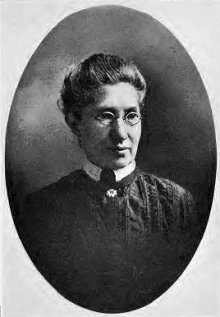
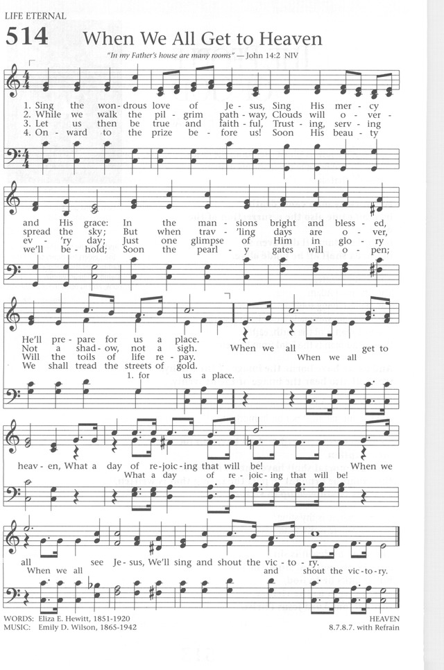

Eliza Edmunds Hewitt was
born in Philadelphia 28 June 1851. She was educated in the public schools
and after graduation from high school became a teacher. However, she
developed a spinal malady which cut short her career and made her a shut-in
for many years. During her convalescence, she studied English literature.
She felt a need to be useful to her church and began writing poems for the
primary department. she went on to teach Sunday school, take an active part
in the Philadelphia Elementary Union and become Superintendent of the
primary department of Calvin Presbyterian Church.
Dianne Shapiro, from
"The Singers and Their Songs: sketches of living gospel hymn writers" by
Charles Hutchinson Gabriel (Chicago: The Rodeheaver Company, 1916)
Emily Divine Wilson; Mrs.
J.G. Wilson; b. May 24, 1865, Philadelphia, Pa.; d. June 23, 1942,
Philadelphia, Pa.; wife of Methodist minister John G. Wilson.
“When We All Get to Heaven”
(“Sing the Wondrous Love of Jesus”)
by Eliza E. Hewitt
The United Methodist Hymnal,701
Sing the wondrous love of Jesus;
sing his mercy and his grace.
In the mansions bright and blessed
he’ll prepare for us a place.
Refrain:
When we all get to heaven,
what a day of rejoicing that will be!
When we all see Jesus,
we’ll sing and shout the victory!

Philadelphians Eliza E. Hewitt (1851-1920) and Emily D. Wilson (1865-1942)
combined as poet and musician respectively to give us a gospel song that
captures the revival spirit of the late nineteenth century in a uniquely
American way.
Carlton R. Young correctly notes that this hymn should be situated in its
“union of revivalism and adventism in much of post-Civil War Wesleyan
preaching and worship” (Young, 699). Adventism was a product of the Second
Great Awakening during the first half of the nineteenth century that peaked
in the 1840s. Its proponent, William Miller (1782-1849), a Baptist preacher,
espoused the belief that the second coming of Jesus Christ would take place
sometime between 1843 and 1844. While that did not take place, the spirit of
Adventism continued throughout the remainder of the century and was evident
in many gospel songs of the era.
Many readers may have grown up singing this and other songs on a similar
theme during Sunday school gatherings, Sunday evening services, or revivals.
Related songs include “When the Roll Is Called Up Yonder” (1899) by James M.
Black (1856-1938), “Shall We Gather at the River” (1865) by Robert Lowry
(1826-1899), and “O that Will Be Glory for Me” (1900) by Charles H. Gabriel
(1856-1932). Make no mistake, hymns that addressed heaven were nothing new.
Many eighteenth-century hymns by Charles Wesley and others referenced heaven
as our ultimate destination. The nineteenth-century gospel song, however,
added a spiritual fervor undergirded by a musical vitality that gave these
songs a sense of imminence and urgency that had not been experienced
heretofore.
The Methodists and Baptists were the dominant sources of these songs that
were often included in collections geared for use in Sunday schools and
revivals. Though aligned with the Presbyterians, Eliza Hewitt’s song was a
product of revivals where the author “regularly attended the Methodist camp
meetings” at Ocean Grove, New Jersey (Reynolds, 194, cited in Young, 699).
These “seasonal and protracted meetings [were] typical of the Wesleyan
campgrounds that were formed, some continuing from earlier in the century,
to embody indoors the spirit of the camp meeting” (Young, 699). The “indoor”
events were extensions of the rural camp meetings of the early nineteenth
century, where the conditions were much more primitive. Tents were pitched,
and roughhewn benches were placed to separate men from women. In these early
nineteenth-century camp meetings, denominational particularities gave way to
more inclusive ecclesial gatherings that included Baptists, Methodists,
Presbyterians, and even Quakers (Lorenz, 17-19). Even more astounding in the
antebellum South was the participation of both African Americans and whites.
As one account notes, “The blacks were the life of the camp meeting. Nine
out of ten of them would have a melodious voice for singing and praying and
shouting, at a great distance from the campground” (G. W. Henry, quoted in
Lorenz, 31).
While the meetings at the end of the nineteenth century at Ocean Grove were
under less primitive conditions, they were still rustic with simple huts and
cottages replacing tents; they were also more domesticated, though the
Spirit was still evident in ways that may not have been present or even
permitted in the confines of mainline church sanctuaries on Sunday morning.
Carlton Young describes the setting under which Eliza Hewitt composed this
song:
At Ocean Grove the author and composer viscerally, visually, and audibly
experienced the thrilling, though carefully staged, anticipation of
Paul’s promise to members of the Thessalonian congregation. “[We] will
be caught up in the clouds together with them to meet the Lord in the
air; and so we will be with the Lord forever” (1 Thessalonians 4: 17).
These first-century Christians, like the Ocean Grovers after days of
hearing perdition preached, had an elevated anxiety about their status
at Christ’s imminent return (Young, 699).
The Ocean Grove Camp Meeting Association remains alive and well with an
active program and options for tents. Seehttps://www.oceangrove.org.
The stanzas of “When We All Get to Heaven” are replete with biblical
allusions:
In stanza 1, the phrase “in the mansions bright and blessed, / he’ll prepare
for us a place” is a rephrasing of John 14:2: “In my Father's house are many
mansions: if it were not so, I would have told you. I go to prepare a place
for you.” (KJV).
Stanza 2 reminds us that in heaven, light replaces “shadows”: “and the city
had no need of the sun, neither of the moon, to shine in it: for the glory
of God did lighten it, and the Lamb is the light thereof” (Revelation 21:23,
KJV). Furthermore, the “sighs” of sorrow and pain will be left behind: “And
God shall wipe away all tears from their eyes; and there shall be no more
death, neither sorrow, nor crying, neither shall there be any more pain: for
the former things are passed away” (Revelation 21:4, KJV).
In stanza 3, the poet notes that, “just one glimpse of him in glory / will
the toils of life repay”; this phrase paraphrases I Peter 4:13, “But
rejoice, inasmuch as ye are partakers of Christ's sufferings; that, when his
glory shall be revealed, ye may be glad also with exceeding joy” (KJV).
Stanza 4 references “the pearly gates” and “streets of gold,” images clearly
drawn from Revelation 21:21: “And the twelve gates were twelve pearls: every
several gate was of one pearl: and the street of the city was pure gold, as
it were transparent glass” (KJV).
Theologically, an ambiguity exists concerning the phrase, “When weallget
to heaven. . .” It could be a Methodist use of “all,” growing out of the
Arminian inclusivity of God’s grace in the Wesleyan tradition versus the
“limited atonement” of Calvinism. It could also be more of an existential
statement about those gathered at Ocean Grove with the assumption that they
were all going to heaven. More than likely, rather than a nuanced
theological assertion, this is an eschatological hope born of revivalistic
emotionalism and hyperbole.
The song was first included inPentecostal
Praises(1898), a compilation by a noted gospel song
composer, William J. Kirkpatrick (1838-1921), and Henry L. Gilmour
(1836-1920), for decades a choir director at camp meetings.
Eliza Edmunds Hewitt lived in Philadelphia her entire life. She was the
valedictorian of her class at the Girls’ Normal School, where she taught for
some years. Hewitt was prominent in the Sunday school movement, devoting
time to youth at the Northern Home for Friendless Children; at Calvin
Presbyterian Church, she served as the Sunday school superintendent. In
spite of a spinal illness that kept her homebound for some years, she
studied English literature and authored several hundred texts. The most
published of her hymns, in addition to “When We All Get to Heaven,” include
“There Is Sunshine in My Soul Today” (1887) and “More about Jesus Would I
Know” (1887), the latter hymn appearing inTheCokesbury
Hymnal(1923, No. 94). She wrote texts for some of the
prominent gospel song composers of the day, including B. D. Ackley
(1872-1958), Charles H. Gabriel, E. S. Lorenz (1854-1942), Homer Rodeheaver
(1880-1955), and John R. Sweney (1837-1899).
Emily Divine Wilson (1865-1942) was also a life-long Philadelphian. The wife
of a Methodist minister, she often attended Ocean Grove with her husband
John G. Wilson. The minutes of the Philadelphia Methodist Conference noted:
Mrs. Wilson was the acknowledged inspiration of her esteemed husband.
She was beloved by the congregations of the churches served. Her musical
ability was a great contribution to the local church, together with her
ability in dramatic art (Leon T. Moore, quoted in Reynolds, 465).
The tune name HEAVEN was ascribed to Wilson’s music by the editor of theBaptist
Hymnal(1956). Of this tune, Carlton R. Young notes, “The
Sunday school marching tune portrays the church, its mission, and the role
of the faithful Christian progressing towards a goal. . . It is a useful
genre of Christian music whereby the faithful are assured the church is on
the move, irrespective of reality” (Young, 699-700). The following rendition
is the original quartet version (taken fromThe
Baptist Hymnal, 1991) that shows the independent lower voices echoing
the text of the melodic line in the refrain, a characteristic of many
revival songs of this day.

Further Reading and Sources:
Ellen Jane Lorenz,Glory,
Hallelujah! The Story of the Campmeeting Spiritual(Nashville:
Abingdon Press, 1978).
William J. Reynolds,Companion
to Baptist Hymnal(Nashville: Broadman Press, 1976).
Carlton R. Young,Companion
to The United Methodist Hymnal(Nashville: Abingdon Press,
1993).
C. Michael Hawn, D.M.A., F.H.S.,
is University Distinguished Professor Emeritus of Church Music and Adjunct
Professor and Director of the Doctor of Pastoral Music Program at Perkins
School of Theology at Southern Methodist University.
“When He shall come to be glorified in His saints, and to be admired in all of
them in that day”(2 Thess. 1:10)
INTRO.:
A song which points us to that day when Christ shall come to be glorified in His
saints and we receive our eternal reward “When We All Get to Heaven” (#194 inHymns
for Worship Revised, and #358 inSacred
Selections for the Church). The text was written by Eliza Edmunds
Hewitt (1851-1920). A schoolteacher who became a partial invalid after one of
her students hit her in the back with a heavy slate, she became a prolific
gospel song text author and gave us such favorites as “Sunshine in My Soul,”
“More About Jesus,” “Stepping in the Light,” and “Who Will Follow Jesus.”
The tune (Heaven) was composed by Emily Divine (Mrs. J. G.) Wilson, who was born
in Philadelphia, PA, on May 24, 1865, the daughter of John and Sarah Lees
Divine. Her father was a native of Ireland, and her mother of England.
In 1887, Emily Divine was married to John G. Wilson, a Methodist preacher who
served as district superintendent of the Philadelphia Conference. Both of them
were well-known at Ocean Grove, NJ, where they regularly attended summer
assemblies. Mrs. Hewitt also regularly attended the Methodist camp
meetings at Ocean Grove with Mrs. Wilson, and their mutual interest apparently
resulted in their collaboration on writing this hymn. Sometimes Mrs.
Wilson is identified as the author. She may have edited Mrs. Hewitt’s
words to fit the music and/or perhaps added the chorus, but this attribution is
probably simply an error as she was primarily a musician.
The song first appeared inPentecostal
Praises, compiled at Philadelphia in 1898 by William James Kirkpatrick
(1838-1921) and Henry Lake Gilmour (1836-1920), and published by the Hall-Mack
Co. Kirkpatrick provided many tunes for gospel songs, including Fanny Crosby’s
“He Hideth My Soul” and “Redeemed, How I Love to Proclaim It.” Gilmour is
best known as the author of “The Haven of Rest.” It was said of Mrs.
Wilson that her musical ability was a great contribution to the work of the
local church and that she was beloved by the congregations where she attended.
At the time of his death on Aug. 2, 1933, her husband was minister at the
Wharton Memorial Methodist church in Philadelphia, and she later died in
Philadelphia on June 23, 1942.
Among hymnbooks published by members of the Lord’s church for use in churches of
Christ, “When We All Get to Heaven” has appeared in the 1935Christian
Hymns(No. 1), the 1948Christian
Hymns No. 2, and the 1966Christian
Hymns No. 3all edited by L. O. Sanderson; the 1937Great
Songs of the Church No. 2edited by E. L. Jorgenson; the 1959Majestic
Hymnal No. 2and the 1978Hymns
of Praiseboth edited by Reuel Lemmons; the 1963Abiding
Hymnsedited by R. C. Welch; the 1963Christian
Hymnaledited by J. N. Slater; the 1965Great
Christian Hymnal No. 2edited by T. S. Teddlie; the 1971Songs
of the Church, the 1990Songs
of the Church 21stC.
Ed., and the 1994Songs
of Faith and Praiseall edited by A. H. Howard; the 1978/1983Church
Gospel Songs and Hymnsedited by V. E. Howard; the 1986Great
Songs Revisededited by F. M. McCann; the 1992Praise
for the Lordedited by J. P. Wiegand; and the 2009Favorite
Songs of the Churchand the 2010Songs
for Worship and Praiseboth edited by R. J. Taylor Jr., in
addition toHymns
for WorshipandSacred
Selections.
The song suggests several things that we must do in order to be ready to get to
heaven.
I. In stanza 1 we learn that we must remember that Jesus is preparing for us a
place
“Sing the wondrous love of Jesus,
Sing His mercy and His grace.
In the mansions bright and blessed
He’ll prepare for us a place.”
A. We should sing the love of Jesus as the one who gave Himself for us: Eph.
5:2
B. We should also sing His mercy and His grace as that by which we are saved:
Eph. 2:4-5
C. The reason for this singing is that He promised His disciples that He was
going to the Father’s house to prepare for us as place and that someday He would
come again to receive us unto Himself: Jn. 14:1-3
II. In stanza 2 we learn that we must not let the clouds that overspread the sky
hinder us
“While we walk the pilgrim pathway,
Clouds will overspread the sky;
But when traveling days are over,
Not a shadow, not a sigh.”
A. We should remember that we are but pilgrims and strangers on earth: 1 Pet.
2:11
B. We should also remember that sometimes the sky may be overspread with
clouds, which represent the things on earth that may cause suffering: 1 Pet.
3:12-13
C. However, even though we may suffer in this life, when traveling days are
over, there will be neither a shadow nor a sigh because our afflictions are
light and temporary in comparison to the eternal weight of glory: 2 Cor. 4:16-18
III. In stanza 3 we learn that we must be faithful in our lives and service
before the Lord
“Let us then be true and faithful,
Trusting, serving every day;
Just one glimpse of Him in glory
Will the toils of life repay.”
A. Only those who are faithful until death are told that they will receive the
crown of life that the Lord has for those who love Him: Rev. 2:10
B. And those who are faithful will be trusting and serving every day: Lk. 9:23
C. The motivation that helps to keep us faithful is the hope for that time when
all our toils will be repaid by even just one glimpse of Him in glory: 1 Jn.
3:1-3
IV. In stanza 4 we learn that we must keep going on toward the goal
“Onward to the prize before us!
Soon His beauty we’ll behold;
Soon the pearly gates will open;
We shall tread the streets of gold.”
A. While we have many spiritual blessings on this earth, the reward of heaven
is not attained in this life, so we must press on to receive it: Phil. 3:13-14
B. Thus we can have the expectation that soon His beauty we’ll behold because
at death we depart to be with Christ: Phil. 1:23
C. And then after judgment we can enter through the pearly gates to walk the
street of gold: Rev. 21:21
CONCL.:
The
chorus expresses the joy that we shall experienced when we do attain this goal.
“When we all get to heaven,
What a day of rejoicing that will be!
When we all see Jesus,
We’ll sing and shout the victory!”
Through the years, objections to this song have been heard from some who say
that not all who sing the song will actually get to heaven. In fact, the
editor ofSacred
Selectionseven changed it to read, “When the saved get to
heaven.” However, certainly all who are faithful will achieve that goal,
so with this understanding there should be no problem in our singing, “When We
All Get To Heaven.”
The story behind this hymn is a tale of two cities and a central common
figure.
John R.
Sweney (1837–1899) was a prominent gospel composer and
musician who spent most of his career in the West Chester and
Philadelphia areas of Pennsylvania. Part of his career included ten
years of service at Bethany Presbyterian Church and Sunday School in
Philadelphia, at one time described as “one of the largest Sunday
Schools in the United States.”[1] Sweney had also developed a career as
a Sunday School songbook compiler and publisher, starting with his first
collection, Gems of Praise,
in 1873.
Sweney became acquainted with
Eliza E.
Hewitt (1851–1920) through his work in Presbyterian
churches and his publishing operations. Hewitt was trained in the field
of education and served for a time in a public school before becoming
active in teaching Sunday Schools. She was a member of the Tabernacle
(Presbyterian) Church in Philadelphia, later serving variously as Sunday
School teacher and superintendent at Olivet Presbyterian Church, the
Philadelphia Primary Union, and Calvin Presbyterian Church. Hewitt had a
passion for writing hymns and songs to supplement her teaching. Some of
them were published in songbooks as early as 1871. In the mid 1880s, she
was enlisted by Sweney to write for his music collections. One of their
first published collaborations was the hymn
“More about Jesus,” in Glad
Hallelujahs (1887). Sweney compiled
The Prayer Meeting Hymn Book of
Olivet Presbyterian Church (1887); Hewitt joined that church in
1890 and served there until 1905.
Among his many endeavors, Sweney was also the song leader for summer
revival meetings held annually at the Methodist campgrounds in Ocean
Grove, NJ. His leadership there started in 1878. The summer camp
meetings at Ocean Grove attracted some notable musicians and writers.
Famed gospel hymn writer
Fanny
Crosby said she developed friendships with composers
John R.
Sweney and
William
Kirkpatrickthrough these meetings.[2] Other regular attendees at Ocean
Grove included prominent Methodist preacher John G. Wilson and his wife
Emily D.
Wilson (1865–1942). Mrs. Wilson was a skilled musician and
leader in her own right. In 1903, an account from Oak Street Church in
Norristown, PA (an “old landmark of Methodism”) said, “Sunday, June 14,
the new presiding elder, John G. Wilson, D.D., preached on ‘The
exaltation of Christ.’ Mrs. Wilson, of Ocean Grove fame, sang.”[3] Two
years later, the same paper described an evangelistic campaign at the
First Methodist Church of Trenton, NJ, at which “The Bishop [C.C.
McCabe] was assisted by Dr. Charles M. Boswell, of Philadelphia, by the
Rev. G. Reed, and Mrs. John G. Wilson in the inspiring service of
song.”[4]
John R. Sweney was likely the catalyst in the introduction of Eliza
Hewitt to Emily Wilson at an Ocean Grove camp meeting, where the ladies
are said to have met. Together, they wrote one of the most enduring
musical tributes to the afterlife, “When We All Get to Heaven,” which
was first published in
Pentecostal Praises (Philadelphia: Hall-Mack Co., 1898 | Fig. 1), a
collection edited by William Kirkpatrick. The original version of the
song contained four stanzas and a refrain. The tune name is usually
given in hymnals as HEAVEN.
The first stanza is based on John 14:2, “In my Father’s house are many
rooms. If it were not so, would I have told you that I go to prepare a
place for you?” (ESV). In the second stanza, singers are reminded of
better days ahead, such as in 2 Corinthians 4:17, “For this light
momentary affliction is preparing for us an eternal weight of glory
beyond all comparison,” or especially Revelation 21:4, “He will wipe
away every tear from their eyes, and death shall be no more, neither
shall there be mourning, nor crying, nor pain anymore, for the former
things have passed away.” The third stanza encourages believers to
continue working on earth, with the ultimate payoff occuring at the
sight of Jesus. This idea is reflected in passages such as 1 John 3:2,
where it says, “when he appears we shall be like him, because we shall
see him as he is,” or the Parable of the Talents in Matthew 25:14–30, or
Revelation 2:10, “Be faithful unto death, and I will give you the crown
of life.” The fourth stanza pictures a prize, a beautiful Savior, pearly
gates, and streets of gold. In the New Testament, 1 Corinthians 9:24
poses the question, “Do you not know that in a race all the runners run,
but only one receives the prize? So run that you may obtain it,” and
Paul told his readers in Philippians 3:14, “I press on toward the goal
for the prize,” while Hebrews 12:1–2 tells us to “run with endurance the
race that is set before us, looking to Jesus, the founder and perfecter
of our faith.” Revelation 1:7 and 22:4 tell us we will one day see His
face. Pearly gates and streets of gold are described in Revelation
21:21. The hymn’s chorus, describing a day of great rejoicing, is
pictured in Revelation 4, 5, 7, 14, and 19.
Emily Wilson’s stirring tune supports the grand images in the text.
Methodist scholar Carlton Young said of it:
This Sunday School marching tune portrays the church, its mission, and
the role of the faithful Christian progressing towards a goal. . . . It
is a useful genre of Christian music whereby the faithful are assured
the church is on the move, irrespective of reality.[5]
by CHRIS FENNER
for Hymnology Archive
22 October 2019
Footnotes:
J.H. Hall, “John R. Sweney,”
Biography of Gospel Song and Hymn Writers (New York: Fleming H.
Revell, 1914), p. 151: Archive.org
Fanny Crosby, Memories of
Eighty Years (Boston: James H. Earle, 1906), p. 139:
Archive.org
“News Paragraphs,” The
Christian Advocate, vol. 78, no. 27 (2 July 1903), p. 1073:
Google Books
“Church News: New Jersey Conference,”
The Christian Advocate,
vol. 80, no. 24 (15 June 1905), p. 950:
Google Books
Carlton R. Young, “When we all get to heaven,”
Companion to the United
Methodist Hymnal (Nashville: Abingdon Press, 1993), pp.
699–700.
Related Resources:
Morris S. Daniels, The Story of
Ocean Grove Related in the Year of Its Golden Jubilee (NY:
Methodist Book Concern, 1919), p. 158:
Google Books
William J. Reynolds, “Sing the wondrous love of Jesus,” “Emily Divine
Wilson,” Companion to Baptist
Hymnal (Nashville: Broadman Press, 1976), pp. 194, 464–465.
C. Paulette Moore, “When we all get to heaven,”
The Worshiping Church: Worship
Leaders’ Edition (Carol Stream, IL: Hope, 1990), no. 679.
Carlton R. Young, “When we all get to heaven,”
Companion to the United Methodist
Hymnal (Nashville: Abingdon Press, 1993), pp. 699–700.